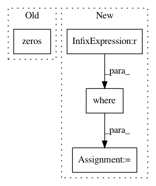

a17b669606cdc5c16fb823b5f00abcacf6a68d70,dipy/reconst/dti.py,TensorFit,odf,#TensorFit#Any#,173
Before Change
return self.evals.mean(-1)
def odf(self, sphere):
odf = np.zeros(sphere.vertices.shape[0])
D = np.dot(np.dot(self.evecs,
np.diag(self.evals)),
self.evecs.T)
iD = np.linalg.inv(D)
After Change
projection /= np.sqrt(self.evals)
odf = vector_norm(projection) ** -3 / lower
// Zero evals are non-physical, we replace nans with zeros
any_zero = (self.evals == 0).any(-1)
odf = np.where(any_zero, 0, odf)
// Move odf to be on the last dimension
odf = np.rollaxis(odf, 0, odf.ndim)
return odf
In pattern: SUPERPATTERN
Frequency: 3
Non-data size: 4
Instances
Project Name: nipy/dipy
Commit Name: a17b669606cdc5c16fb823b5f00abcacf6a68d70
Time: 2012-10-24
Author: mrbago@gmail.com
File Name: dipy/reconst/dti.py
Class Name: TensorFit
Method Name: odf
Project Name: broadinstitute/keras-rcnn
Commit Name: eb4732369125efb8c9c87ad79544e99c1aa3b67e
Time: 2019-04-30
Author: allen.goodman@icloud.com
File Name: keras_rcnn/applications/_jhung2019.py
Class Name: JHung2019
Method Name: predict
Project Name: SPFlow/SPFlow
Commit Name: 3485c83fc9b045356c405fec9008f2ff6220edd7
Time: 2018-09-03
Author: molina@cs.tu-darmstadt.de
File Name: src/spn/experiments/conditional/img_tools.py
Class Name:
Method Name: stitch_imgs